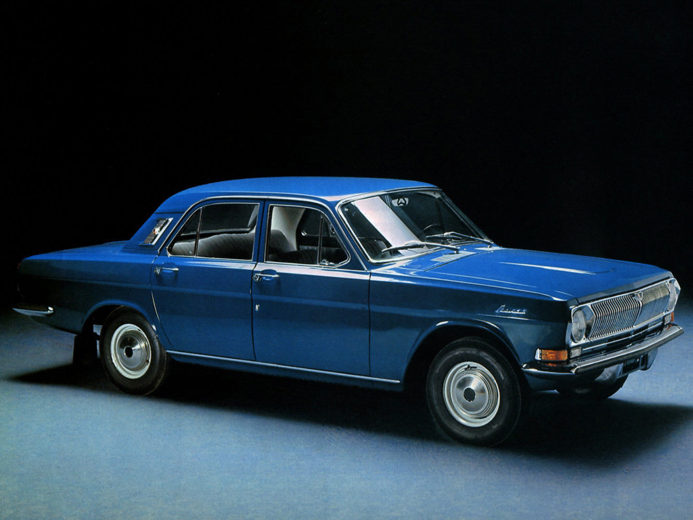

Автомобиль ГАЗ-24

ГАЗ-24 «Волга» — советский автомобиль среднего класса, серийно производившийся на Горьковском автомобильном заводе с 1968 по 1986 год. Модель пришла на смену модели ГАЗ-21 «Волга», фактически став последним принципиально новым отечественным автомобилем данного класса ГАЗ, кузов которого послужил основой для модернизированной и рестайлинговой модели 3102 и паллиативных 31029/3110: ввиду непоявления современного для 1990—2000 годов кузова ― ГАЗ-3103.
Техничнеские характеристики
- Размеры, мм
- Длина 4921
- Ширина 1812
- Высота 1422
- Колёсная база 2800
- Клиренс 160
- Ширина передней колеи 1500
- Ширина задней колеи 1444
- Размер колёс 195/65/R15
Варианты исполнения
- 2.1 MT 95 л.с. дизель
- 2.3 MT 131 л.с. бензин
- 2.3 MT 150 л.с. бензин
- 2.2 MT 137 л.с. бензин
- 2.5 MT 81 л.с. бензин
- 2.5 MT 95 л.с. бензин
- 2.5 MT 150 л.с. бензин